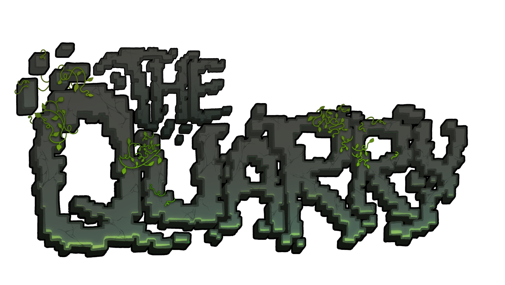

| The Quarry | |
|  | |
| Server IP | play.thequarry.xyz |
| Version | Java Edition 1.21.4 |
| Server Software | Paper |
| Game Mode | Survival |
| Server Type | Semi-Vanilla SMP |
| Whitelist | Yes |
| Launch Date | September 2025 |
| Community Size | Small (20-30 players) |
| Discord | Join Server |
The Quarry is a semi-vanilla survival multiplayer Minecraft server launched in September 2025. The server emphasizes community building, player interaction, and democratic governance through monthly mayoral elections. Operating on Paper server software with Java Edition 1.21.4, The Quarry aims to recreate the authentic community experience of early Minecraft multiplayer servers.
Overview
The Quarry was founded with the goal of recreating the community-focused experience that characterized early Minecraft multiplayer servers. Unlike large-scale servers with hundreds of concurrent players, The Quarry maintains a small, tight-knit community where individual players can make meaningful impacts on the server's development and culture.
The server operates on a semi-vanilla philosophy, maintaining core Minecraft gameplay mechanics while incorporating performance optimizations and community-driven features. Voice chat integration allows for real-time communication, fostering stronger social connections between players.
Gameplay Features
Mayoral Elections
Every month, The Quarry holds democratic elections to choose a mayor who gains authority over:
- Economic policies - Trade regulations and resource allocation
- Community events - Festivals, competitions, and gatherings
- Infrastructure development - Public projects and server improvements
- Conflict resolution - Mediating disputes between players
Player Economy
The Quarry features a plugin-free economy based entirely on player interaction, reputation, and resource trading. Without virtual currency systems, economic activity relies on:
- Direct resource bartering
- Service-based transactions
- Community reputation and trust
- Collaborative business ventures
Community Projects
Large-scale building projects are undertaken collectively, with community input on design and implementation. Recent projects include shared transportation networks, public facilities, and collaborative town planning.
Technical Specifications
The Quarry operates on Paper server software, a high-performance fork of the official Minecraft server that provides:
- Enhanced performance and reduced lag
- Bug fixes for vanilla Minecraft issues
- Improved chunk loading and entity processing
- Maintains complete gameplay compatibility
Server Configuration
- Difficulty: Hard
- PvP: Enabled (community-regulated)
- Keep Inventory: Disabled
- Mob Griefing: Enabled
- World Border: Unlimited
- Uptime: 24/7 with minimal scheduled maintenance
Server Rules
The Quarry maintains a streamlined set of community guidelines focused on respect and fair play:
Core Principles
- Respect: Treat all community members with basic courtesy
- Fair Play: No cheating, griefing, or exploitation
- Community Space: Maintain appropriate distance (50+ blocks) from other players' builds
- Environmental Care: Clean up after resource gathering and construction
Enforcement
Rule violations follow a progressive discipline system: Warning → Temporary Ban → Permanent Ban. Staff maintain final authority on rule interpretation and enforcement.
Joining the Server
Access to The Quarry requires whitelist approval through a community application process:
- Join the Discord community
- Complete the application form in the designated channel
- Await staff review (typically 24-48 hours)
- Connect to play.thequarry.xyz upon approval
Application Requirements
Prospective players provide basic information including Minecraft username, age, server interests, and community goals. The application serves both as a screening process and an introduction to the community culture.
Server History
Foundation Era (September 2025)
The Quarry was established in September 2025 as a response to the perceived decline in community-focused Minecraft servers. The founding concept emphasized authentic social interaction over technical features or large-scale gameplay modifications.
Within the first two weeks of operation, the server established its core community structures, including the democratic governance system and player-driven economic framework. Early settlements began forming around spawn areas, with collaborative infrastructure projects connecting initial player builds.
Early Development
- Week 1: Initial player settlements and resource establishment
- Week 2: First trading relationships and community projects
- Month 1: Implementation of mayoral election system
| Minecraft Server Communities |
| Small Community Servers • Semi-Vanilla SMPs • Democratic Servers • Whitelist Communities |